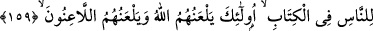

kalıbın değil, kalbin de gayb âlemine doğru yönelmesidir. Nitekim Mesnevî’de şöyle
gelmiştir:
Senin meylin deve dikeni ve kum tarafınadır.
Ölü kum ve dikenden gül toplamaya kalkarsın.
et-Te’vîlâtü’l-Kaşaniyye’de şöyle gelmektedir: “Safâ”dan maksad kalb, “Merve”den
maksad ise nefistir. Kalb ve nefis, Allah’ın dîninin işâretlerindendir. Bu dînin kalble
ilgili menâsiki yakîn, tevekkül , rızâ ve ihlâs; nefisle ilgili olanları ise sabır, şükür, zikir
ve fikirdir. Küllî ve zâtî bir yok oluşla; vahdet-i zâtî makamına ulaşıp İlâhî huzûra giren,
cemâl ve celâl nûrlarında fenâya ermek sûretiyle müşâhede makamına ulaşan kimsenin
imkân bulduktan sonra kendisine bağışlanan hakkanî varlıkla, kalb ve nefs arasında
gidip gelmesi husûsunda bir günah yoktur. Seyr ü sülûkunu ikmâl edip bakâ billâh
derecesine ulaşan kimse, kalb makamında tekmil, ta’lîm, irşâd ve halka şefkat
bakımından; nefs makamında ise güzel ahlâk, iyilik, takvâ, zayıf ve miskinlere yardım
ve gayret tahsîli açısından hayır işlerse şüphesiz Allah bunun, karşılığını fazlasıyla
verir. Kaşânî’nin sözü burada sona erdi.
Bir Arap şâiri şöyle söyler:
Ey nimetleri görülen, zâtı gizli olan Allah!
Sen su gibisin, biz değirmen.
Sen rüzgâr, biz ise o rüzgârın savurduğu tozlar gibiyiz.
Tozlar açıkta görüldüğü halde rüzgâr gizlidir.
159. İndirdiğimiz açık delilleri ve kitapta insanlara apaçık gösterdiğimiz hidâyet
yolunu gizleyenlere hem Allah hem de bütün lânet ediciler lânet eder.
Tevrat’ta, sâdece bilginlerin değil, bütün herkesin şüphe etmeksizin anlayabileceği bir
tarzda, Hz. Muhammed (s.a.)’in peygamberliği, “recm olayı”, “kıblenin değişimi”,
“haram ve helâl” gibi mevzuları açıklayan, Hz. Peygamber’in peygamberliğine
inanmanın ve O’na uymanın gerekliliğini bildiren âyetlerimizi gizleyenler vardır. İşte
onları, Allah rahmetinden uzaklaştırır. İns ve cinnin mü’minlerinden ve meleklerden
bütün lânet ediciler onlara, “Allah’ın lâneti üzerinize olsun.” diyerek bedduâ ederler.
Bu âyet, Yahûdî reisleri ve âlimleri veya dînin ahkâmından bir şey gizleyen herkes
hakkında nâzil olmuştur. Lâfzın umûmî olması bakımından ikinci görüşü kabûl etmek
daha uygundur. Çünkü hükmün umûmî oluşu sebebin husûsîliğini gerektirmez.
Gizlemek anlamına gelen “ketm” ve “kitman” kelimeleri, geniş anlamıyla;